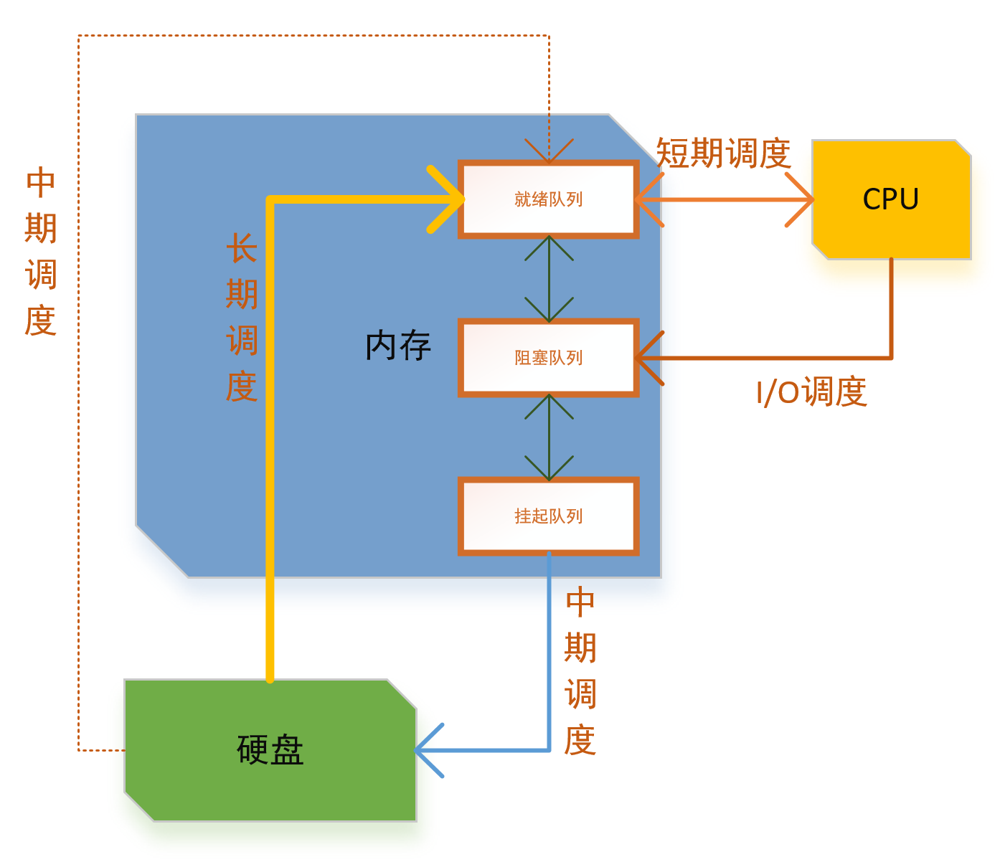
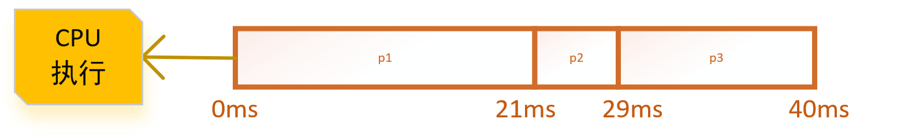
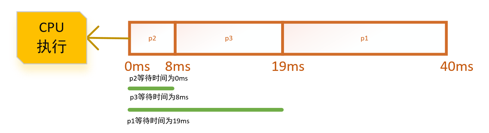
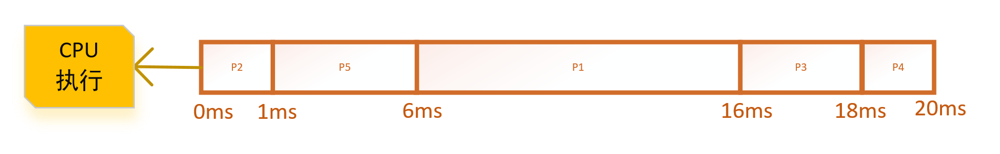
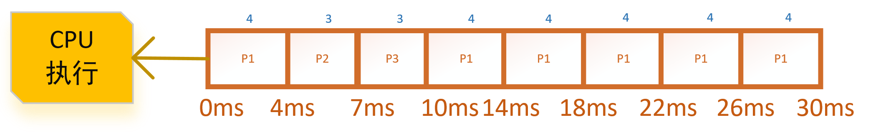
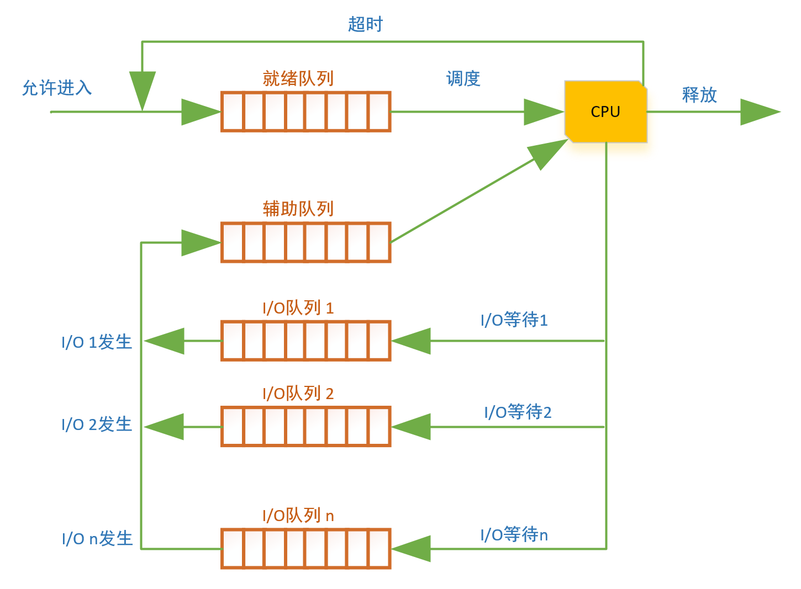
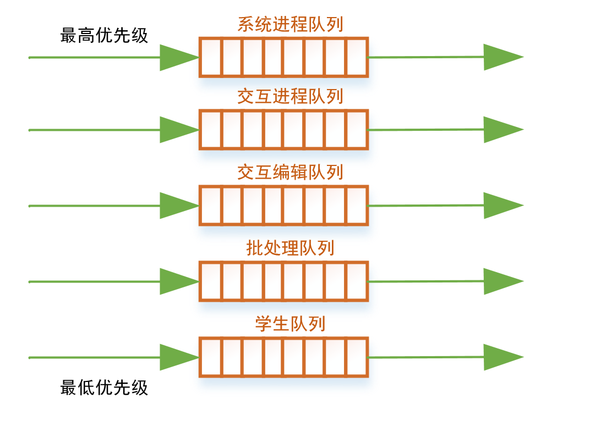
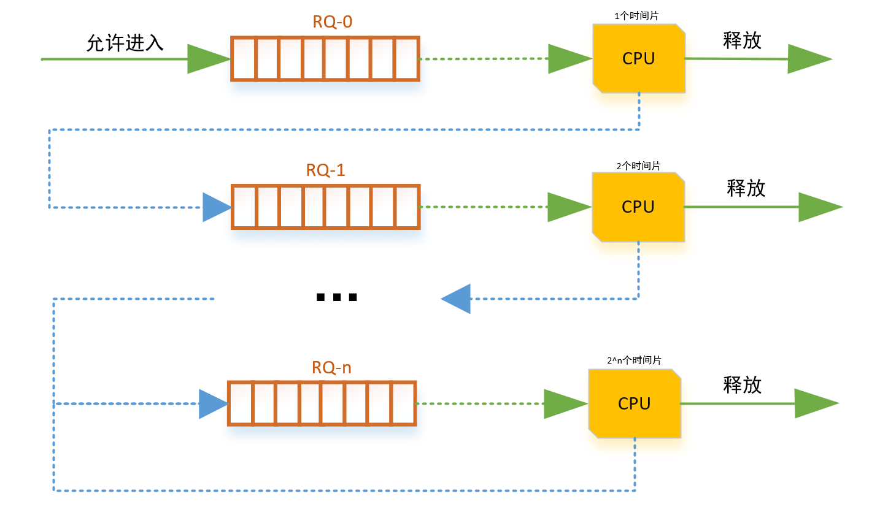
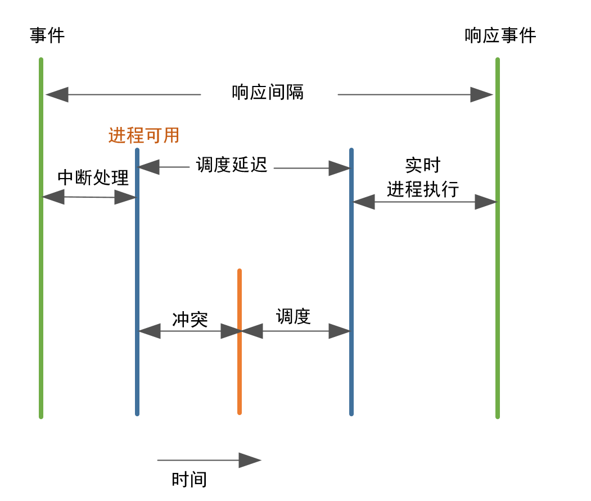

进程调度的基本概念
进程在执行期间，操作系统切换CPU执行的进程和选择下一个进程的操作叫做调度。
对于支持线程的操作系统，操作系统调度的单位是
线程而不是进程。
处理器调度器的类型
程序是指令的集合，但是有些程序对I/O操作比较更偏向（话句话说，就是这个进程的指令大部分都是用来调用I/O的指令），而有些产生很少I/O请求，更多的是用于执行计算。
I/O密集型进程：执行I/O比执行计算需要花费更多的时间。这样对CPU的利用率比较低，CPU需要花费更多的等待I/O的完成。这种进程通常被称为阻塞。CPU密集型进程：产生很少的I/O请求，更多的是执行逻辑计算，即对CPU的利用比较好。
调度在计算机中式是分配工作所需资源的方法。而进行调度工作的程序叫做调度器（即调度器决定了何时运行什么进程）。调度器可能会针对不同的目标设计，例如：吞吐率最大化、响应时间最小化、最低延迟、或最大化公平。通常这些目标是互相冲突的，因此，调度器会使用一个权衡利弊的折中的方案，针对不同的方法可以把调度器分为：
短期调度器：也叫CPU调度器，从准备执行的进程队列中选择一个进程的调度程序，并分配CPU。即当一个时钟中断、I/O中断、系统调用其它种类的信号之后，系统需要调度，由该调度器决定应该执行（分配CPU）哪个处于就绪状态的进程。这个调度器执行的频率最多，所以对其切换进程的时间消耗要求较低。长期调度器：在批处理系统中，由于新添加的进程（作业）是存储在磁盘上的，当需要执行这个进程时，即由长期调度进程调度。即决定了一个任务或者进程是否可以进入到就绪队列中。因此长期调度器决定着一个系统的并发程度：同步执行的程序有多少。中期调度器：当内存空间（不适用虚拟内存的情况下）不足时，需要把内存中的进程换出到硬盘上，当系统内存充足时或者当该进程再次被执行时，或者进程不再处于阻塞状态时，调度器又会将内存重新放入内存中。I/O调度器：这种调度程序是决定哪一个被挂起的I/O请求先被I/O处理器处理。
短期调度、长期调度、中期调度相比较：长期调度，又称为作业调度或高级调度，这种调度将已进入系统并处于后备状态的作业按某种算法选择一个或一批，为其建立进程，并进入主机，当该作业执行完毕时，还负责回收系统资源，在批处理系统中，需要有作业调度的过程，以便将它们分批地装入内存，在分时系统和实时系统中，通常不需要长期调度。它的频率比较低，主要用来控制内存中进程的数量。
中期调度，又称为交换调度。它的核心思想是能将进程从内存或从CPU竞争中移出，从而降低多道程序设计的程度，之后进程能被重新调入内存，并从中断处继续执行，这种交换的操作可以调整进程在内存中的存在数量和时机。其主要任务是按照给定的原则和策略，将处于外存交换区中的就绪状态或等待状态的进程调入内存，或把处于内存就绪状态或内存等待状态的进程交换到外存交换区。
短期调度，又称为进程调度、低级调度或CPU调度。这也是通常所说的调度，一般情况下使用最多的就是短期调度。它的主要任务是按照某种策略和算法将处理机分配给一个处于就绪状态的进程，分为抢占式和非抢占式。

调度准则
通过上面的调度器介绍，现在都已经知道什么是调度器了吧。在上面也提到了一点调度器会针对不同的目标设计，例如：吞吐率最大化、响应时间最小化、最低延迟、或最大化公平。下面所叙述的即是针对这几个概念的介绍。不同的调度器的使用不同的调度算法都是针对不同的准则：
CPU使用率：即是让CPU尽可能的忙碌。注重这种的调度算法则更多的是偏向计算型进程。吞吐量：在单位时间内进程完成的数量。周转时间：一个进程从提交到该进程完成的时间段。周转时间是所有时间段之和，包括：等待进入内存、在就绪队列中等待、在CPU上执行和I/O执行的时间。等待时间：进程在就绪队列中等待的时间之和。这个是关于调度算法的一个标量，和具体进程的运行时间和I/O时间无关。响应时间：这个量是针对交互系统来说的，指用户提交一个请求给系统到系统给用户展示出一个响应（结果）的时间。
在调度策略上，还有一个当CPU执行进程过程中的概念：
非抢占：这种情况下一旦CPU开始执行某一个进程后，其他进程只能等待或者当前正在执行的进程主动放弃执行，其他进程才可以进行执行。抢占：当前正在执行的进程可以被操作系统中断执行并且转移到就绪状态中，然后选择其他进程开始执行。
单进程调度
先来先服务调度算法
最简单的CPU调度算法就是把进程放入一个队列中，然后当CPU执行完成后（非抢占算法），选择下一个进程开始。这种调度算法也叫做先到先服务（First-Come First-Served, FCFS）。这种调度算法也是最容易实现和理解的，但是其也存在一个缺点：进程的平均等待时间太长。由于每一个进程都必须等待前面的进程完成开可以开始执行，当前面的进程需要很长的执行时间时（或者发生I/O调用CPU被阻塞，等待I/O完成），导致原本需要很短的执行时间的进程等待的时间过长。不过这种算法通常和优先级配合使用。

最短进程优先调度算法
短程调度算法（Shortest-Process-Next, SPN），也叫做短作业优先（Shortest-Jpb-First, SJF），这个算法是为了解决FCFS算法缺点提出的：选择下一个进程时，选择下一次语句处理（运行）时间最短的进程。这样就可以把执行时间短的进程先执行完成，在执行长进程，类似于对进程的执行时间先排序。SJF调度算法的平均时间是最小的。

不过SJF算法存在一个难点：就是需要知道或者至少估计每一个进程所需要的处理时间。在批处理操作系统中，系统要求程序员估计该值并提供给系统。
SJF调度经常在长期调度器中使用。这个算法很难在短期调度器上使用，因为很难确定下次CPU执行的长度（时间）。
SJF调度可以为抢占或者非抢占的。可以抢占的SJF调度有时也称最短剩余时间优先(Shortest-Remaining-Time-first, SRT)。可以抢占的意思就是当来了一个执行时间比当前CPU执行的进程的执行时间还要短的进程时，则更短执行时间的进程抢占原来的进程开始执行。
SJF调度需要一个执行时间，那么这个时间怎么得到？(选看)
这个值通常都是根据以往的数据进行估算得出的。
- 针对执行相同的进程，系统对每一次进程的执行时间进行统计计算。
- 对于交互式进程，则系统为每一个进程保留一个运行平均值，最简单的计算方式：
$$ S_{n+1} = {\frac{1}{n}} {\sum_{i=1}^{n}{T_i}} $$
其中：
- $T_i$：该进程的第$i$个实例的处理器执行时间（对批作业而言是总执行时间，对交互式而言指处理器一次短促的执行时间）
- $S_i$：第$i$个实例的预测值
- $S_1$：第一个实例的预测值，非计算所得。
上面时每一次求运行平均值都需要之前的所有数据，这样并不高效，可以使用下面的方式只记录上次的结果：
$$ S_{n+1} = {\frac{1}{n}T_n} + {\frac{n -1}{n}}S_n $$这个方法针对每一个进程的权值都是相同的，即很久之前的进程执行时间数据也会影响现在的结果更好的计算是指数平均法。
指数平均法：
$$ S_{n+1} = {\alpha}T_n + (1 - {\alpha}S_n) $$
${\alpha}$是一个常数加权因子($0 < \alpha < 1$)，用与确定局限在比较近或比较远的观测数据的相对权值。
优先级调度算法
SJF调度算法是通用优先级调度算法中的一个特例（SJF调度中。进程的优先级是下次预测的CPU执行时间的倒数，CPU执行时间越长，则优先级越小）。优先级调度中高优先级会被CPU先调用，如果进程的优先级相同，则使用FCFS顺序调度。
举个例子：有一组进程，按照下表的顺序到达
| 进程 | 执行时间 | 优先级 |
|---|---|---|
| P1 | 10 | 3 |
| P2 | 1 | 1 |
| P3 | 2 | 4 |
| P4 | 1 | 5 |
| P5 | 5 | 2 |
则执行顺序为：

优先级的一些特点
优先级的定义可以分为内部的或者外部的：
- 内部定义通常采用一些测量数据计算优先级
- 外部优先级则采用操作系统之外的准则，比如进程的重要性、紧急性等。
优先级调度可以是抢占的或者非抢占的
那么优先级调度有什么缺点呢？
一旦有了“尊卑”之分，CPU就会更加的偏袒“尊贵”的进程，那么“卑微”的进程可能就会进入到无穷的等待中。我们把以及一个进程可以执行（就绪队列中）但是一直得不到CPU的执行这种情况称为饥饿。
轮转调度算法
轮转（Round-Robin, RR）调度算法专门为分时系统设计的。它依靠时钟特性对进程的执行进行控制。
算法思路：以一个周期性间隔产生时钟中断，当发生时钟中断时，当前正在执行的进程被置与就绪队列中，然后基于FCFS策略选择下一个就绪的进程执行。通常把时钟产生的一个周期性间隔叫做时间片。这个大小通常是10ms ~ 100 ms。调度器给每一个将要执行的进程分配不超过一个时间片的CPU。
通过上面的介绍我们可以知道时间片的设置关系着进程的CPU执行时间。如果时间片设置的过小，则整个系统会花费大量的时间处理时钟中断、执行调度和分派函数操作。如果设置的过长，则会使一些进程等待的时间过长（即会变成类似于FCFS的调度算法）。
举个栗子：有一组进程，按照下表的顺序到达
| 进程 | 执行时间 |
|---|---|
| P1 | 24 |
| P2 | 3 |
| P3 | 3 |

虚拟轮转法（选看）
轮转法处理时间片的选择问题还存在其他问题吗？
既然我说了，那肯定是有的(^-^)。
进程可分为I/O密集型和CPU密集型。没错，轮转法正是对这两种类型的进程不公平！！！I/O密集型使用一段时间片（未使用完）后就调用I/O时间让出了CPU进入阻塞状态等待I/O操作的完成，而CPU密集型使用完整的时间片并且立即返回到就绪队列。因此CPU进程不公平的使用了大部分处理器时间，从而导致了I/O密集型的进程性能降低、使用I/O设备低效、响应时间的变化大。
解决上述问题的方式是使用虚拟轮转法（Virtual Round Robin, VRR）：

新进程到达并加入就绪队列，是基于FCFS管理的。当一个正在执行的进程的时间片用完了，它返回到就绪队列。当一个进程为I/O而阻塞时，它加入到一个I/O队列。当一个I/O阻塞的进程处理完成后，被转移到一个FCFS辅助队列中。当进行一次调度决策时，辅助队列中的进程优先就绪队列中的进程。当一个进程从辅助队列中调度时，它的运行时间不会长于基本时间段减去它上一次从就绪队列中被选择运行的总时间。
多级队列调度算法
多级队列调度针对的是进程响应时间的不同要求而提出的。进程可以分为前台进程（foreground process）和后台进程（background process）。前台进程对响应时间要求比较高，需要更快的响应给用户信息。多级队列调度算法即根据对进程进行分类（根据进程属性，比如内存大小、进程类型等），然后放入不同的进程队列中（永久属于该队列），然后针对不同的队列使用不同的调度算法；在多个队列之间选择时，按照队列的优先级。比如前台队列使用RR算法，后台队列FCFS算法，而前台队列的优先级比后台队列的优先级高。

对于选择哪一个队列，也可以使用一定比例分配CPU执行时间
这个算法有什么缺点呢？
这个算法是使用进程内加载到内存后，就把该进程永久地放到一个队列中，即不论以后发生什么，该进程都会在这个队列中，除非结束；这样就缺乏了灵活性。不过这种算法对于调度开销则比较低。
多级反馈队列调度
多级反馈队列调度算法的原理类似于多级队列调度算法：都是用队列对进程进行分类。不过多级队列调度算法是按照进程的属性进行分类，而多级反馈队列调度怎么按照CPU的执行进行分类的。换句话说：多级队列调度算法是自己本身“一出生”就一定确定了自身的一切；而多级反馈队列调度则是CPU给你n个机会执行，每一次执行你的机会就少一次（CPU对你的“宠爱”就减少一点）。多级反馈队列调度本质就是偏向短作业，对长作业进行“处罚”。
多级反馈队列调度算法的原理：
多级反馈队列调度算法的调度原则是基于抢占原则（时间片）并且使用动态优先级机制。即使用n个优先级队列，当一个进程第一次进入到内存时，处于在优先级最高的RQ0（Running Queue 0，这是就绪队列）中，当一个RQ0的进程被CPU执行完成（时间片使用完）或者I/O中断发生后，则该进程让出CPU，进入到RQ1中。即每得到一次CPU资源后就进入到下一等级的就绪队列中。当调度器需要选择一个进程时，调度器会从RQ0 ~ RQn队列中一个一个地遍历寻找可以执行的进程。对于不同等级的队列，在获取CPU时得到的时间片不同。一般而言，从$RQ_i$中获取的进程允许执行的时间片为$2^i$个。

高响应比优先调度
高响应比优先调度(Highest Response Ratio Next, HRRN)算法是为了解决在SJF中，长进程的运行得不到保证而提出的。它是通过计算一个进程的等待时间设置该进程的优先级的方式。本质是通过等待时间值的增大，动态提高优先级：
$$ R = \frac{w + s}{s} = 1 + \frac{w}{s} $$
其中：$R$是响应比、$w$是等待时间、$s$是估计得到的需要运行的时间，即预计的服务时间
只有第一个进程运行时$R$的值才会为 $1.0$
由上式可以看出：
- 如果作业的等待时间相同，则要求服务的时间愈短（短进程），其优先级愈高，因而类似于SJF算法，有利于短作业。
- 当要求服务的的时间相同时，作业的优先级又取决于其等待时间，因而又类似于FCFS算法。
- 对于长作业的优先级，可以随等待时间的增加而增大，当其等待时间足够长时（比例提高），也可获得处理器。
- 在每次进行调度前，都需要进行响应比的计算，显然会增加系统开销
公平共享调度
公平共享调度(Fair-share scheduling,FSS)算法主要是针对的是进程组调度和按比例分配的思路。
这个算法的思路是把一组进程进行一起调用，或者对于一组的用户分配一定的资源。这样保证不重要的组无法垄断资源，未使用的资源按每个组之间的比例进行分配，如果一个组没有达到资源使用率则获得更高的优先级。
一个组$k$中的进程$j$:
$$ CPU_j(i) = \frac{CPU_j(i - 1)}{2} $$
$$ GCPU_k(i) = \frac{GCPU_k(i - 1)}{2} $$
$$ P_j(i) = Base_j + \frac{CPU_j(i)}{2} + \frac{GCPU_k(i)}{4 W_k} $$
其中：
- $CPU_j(i)$: 进程$j$在时间区间$i$中处理器使用情况的度量
- $GCPU_k(i)$: 组$k$在时间区间$i$中处理器使用情况的度量
- $P_j(i)$: 进程$j$在时间区间$i$开始处的优先级；值越小表示的优先级越高
- $Base_j$: 进程$j$的基础优先级
- $W_k$: 分配给组$k$的权值，且具有约束: $0 < W_k <= 1 和 \sum_{k}{W_k} = 1$
多处理器调度
当一个CPU的性能不足以支撑程序的使用时，我们都选择增加多个CPU一起工作，多个CPU一起工作我们称为多处理器结构。我们常见的有多处理器的系统有：
- 松耦合、分布式多处理器、集群：这是由多个CPU（单核），每一个CPU都有自己的内存和I/O通道组成的一个大的系统。
- 专门功能的处理器：I/O处理器即是一个例子，这个处理器在I/O主控器上，它由主CPU控制执行，专门负责I/O请求处理。
- 紧耦合多处理器：由多个CPU核心使用同一个内存并且在操作系统完全控制下的处理器组成。
多处理器的一些特点
多处理器分工
多处理器同时工作，有两种方式：
- 一个主处理器调用其他处理器，这个主处理器处理所有调度决定，I/O处理以及其他活动，让其他处理器执行指令。这种称为
非对称多处理器(asymmetric multiprocessing)。 - 每一个处理器自我调度，自我执行指令。这种称为
对称多处理(Symmetric MultiProcessing, SMP)。
粒度
粒度是指多处理器执行进程时对进程之间的同步频率。粒度大小分为5个级别：
| 粒度大小 | 说 明 | 同步间隔（指令） |
| :- | :- | :-: |
| 细 | 单指令流中固有的并行 | <20 |
| 中等 | 在一个单独应用中的并发处理或者多任务处理 | 20 ~ 200 |
| 粗 | 在多道程序环境中并发进程的多处理 | 200 ~ 2000 |
| 非常粗 | 在网络节点上进行分布处理，以形成一个计算环境 | 2000 ~ 1M |
| 无约束 | 多个无关进程| 不适用 |
实时调度
实时调度是实时操作系统上对进程的调度，这类操作系统现在在嵌入式系统中使用最为广泛。实时系统根据其对于实时性要求的不同，可以分为软实时和硬实时两种类型。
- 硬实时系统指系统要有确保的最坏情况下的服务时间，即对于事件的响应时间的截止期限是无论如何都必须得到满足。
- 软实时系统就是那些从统计的角度来说，一个进程能够得到有确保的处理时间，到达系统的事件也能够在截止期限到来之前得到处理，但违反截止期限并不会带来致命的错误。
实时系统通常做的事情就是等待一个实时事件的发生。事件可能来自软件或者硬件。/
最小化延迟
这个算法的目的是尽可能快地响应和服务事件。通常我们把从事件发生到事件得到服务的这段时间称为事件延迟。
而事件延迟通常来自：中断延迟和调度延迟。
中断延迟：从CPU收到中断到中断处理程序开始的时间调度延迟：调度程序从停止一个进程到启动另一个进程所需的时间量

单调速率调度
这个算法是解决什么问题的呢？还是看看定义吧！
单调速率调度算法采用抢占的、静态优先级的策略，调度周期性的任务。
最早截止期限优先级调度
比例分享调度
其他（忽略的问题）
- 线程调度
- 多处理的亲和性
- 多处理器的负载均衡